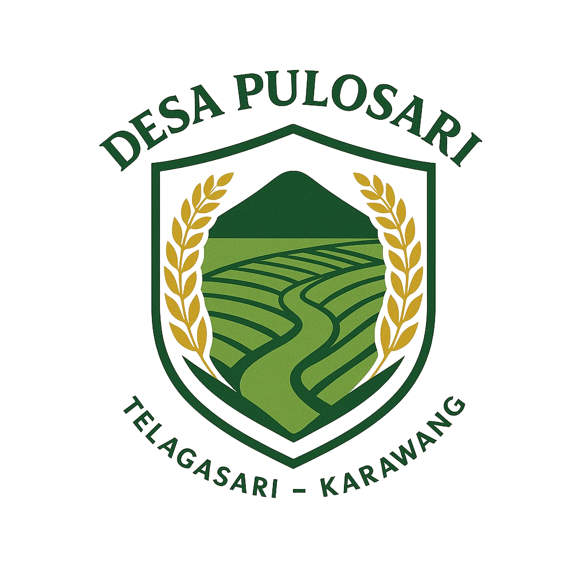

Menelusuri Jejak Sejarah dan Tradisi Desa Pulosari
Desa Pulosari adalah salah satu desa yang terletak di Kecamatan Telagasari, Kabupaten Karawang, Jawa Barat. Berdasarkan cerita dari para sesepuh desa, asal-usul Desa Pulosari tidak terlepas dari peran para pendatang dan pejuang yang menetap di wilayah tersebut pada masa lampau.
Nama "Pulosari" diyakini berasal dari kata "Pulo" yang berarti pulau kecil atau tempat yang menonjol, dan "Sari" yang berarti inti atau pusat kebaikan. Secara filosofis, Pulosari dimaknai sebagai tempat yang menjadi pusat kehidupan dan kesejahteraan bagi masyarakatnya. Konon, dahulu Desa Pulosari merupakan daerah yang dikelilingi hamparan sawah dan saluran air, yang membuatnya tampak seperti sebuah pulau kecil di tengah lahan pertanian.
Pada awalnya, Desa Pulosari adalah bagian dari wilayah desa tetangga yang kemudian dimekarkan karena pertumbuhan jumlah penduduk dan perkembangan aktivitas pertanian. Proses pemekaran ini bertujuan agar pengelolaan wilayah menjadi lebih efektif dan pelayanan kepada masyarakat semakin baik.
Seiring berjalannya waktu, Desa Pulosari berkembang menjadi salah satu desa yang dikenal dengan kegiatan pertaniannya yang subur berkat irigasi dari saluran sekunder di wilayah Telagasari. Selain itu, masyarakat Desa Pulosari juga dikenal sebagai komunitas yang menjunjung tinggi nilai kebersamaan dan gotong royong.
Dalam perkembangannya, desa ini terus berbenah untuk membangun infrastruktur, meningkatkan pelayanan publik, serta memperkuat pelestarian budaya lokal. Salah satu kegiatan rutin yang menjadi ciri khas Desa Pulosari hingga saat ini adalah program "Jum’at Bersih", di mana warga secara bersama-sama menjaga kebersihan lingkungan sebagai bentuk kepedulian sosial.
